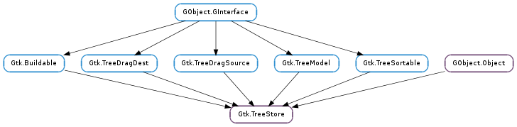

| static | new(types) |
| append(parent[, row]) | |
| clear() | |
| insert(parent, position[, row]) | |
| insert_after(parent, sibling[, row]) | |
| insert_before(parent, sibling[, row]) | |
| insert_with_values(parent, position, columns, values) | |
| is_ancestor(iter, descendant) | |
| iter_depth(iter) | |
| iter_is_valid(iter) | |
| move_after(iter, position) | |
| move_before(iter, position) | |
| prepend(parent[, row]) | |
| remove(iter) | |
| set(treeiter, *args) | |
| set_column_types(types) | |
| set_value(treeiter, column, value) | |
| swap(a, b) |
None
None
| Name | Type | Access |
|---|---|---|
| parent | GObject.Object | r |
Bases: GObject.Object, Gtk.Buildable, Gtk.TreeDragDest, Gtk.TreeDragSource, Gtk.TreeModel, Gtk.TreeSortable
The Gtk.TreeStore object is a list model for use with a Gtk.TreeView widget. It implements the Gtk.TreeModel interface, and consequentialy, can use all of the methods available there. It also implements the Gtk.TreeSortable interface so it can be sorted by the view. Finally, it also implements the tree drag and drop interfaces.
Gtk.TreeStore as Gtk.Buildable The Gtk.TreeStore implementation of the Gtk.Buildable interface allows to specify the model columns with a <columns> element that may contain multiple <column> elements, each specifying one model column. The “type” attribute specifies the data type for the column.
A UI Definition fragment for a tree store
<object class="GtkTreeStore">
<columns>
<column type="gchararray" />
<column type="gchararray" />
<column type="gint" />
</columns>
</object>
| Parameters: | types ([GObject.GType]) – |
|---|---|
| Returns: | a new Gtk.TreeStore |
| Return type: | Gtk.TreeStore |
Creates a new tree store as with n_columns columns each of the types passed in. Note that only types derived from standard GObject.Object fundamental types are supported.
As an example, gtk_tree_store_new (3, G_TYPE_INT, G_TYPE_STRING, GDK_TYPE_PIXBUF); will create a new Gtk.TreeStore with three columns, of type int, string and GdkPixbuf.Pixbuf respectively.
| Parameters: | parent (Gtk.TreeIter or None) – A valid Gtk.TreeIter, or None |
|---|---|
| Return type: | iter: Gtk.TreeIter |
Appends a new row to tree_store. If parent is non-None, then it will append the new row after the last child of parent, otherwise it will append a row to the top level. iter will be changed to point to this new row. The row will be empty after this function is called. To fill in values, you need to call Gtk.TreeStore.set () or Gtk.TreeStore.set_value ().
Removes all rows from tree_store
| Parameters: |
|
|---|---|
| Return type: | iter: Gtk.TreeIter |
Creates a new row at position. If parent is non-None, then the row will be made a child of parent. Otherwise, the row will be created at the toplevel. If position is -1 or is larger than the number of rows at that level, then the new row will be inserted to the end of the list. iter will be changed to point to this new row. The row will be empty after this function is called. To fill in values, you need to call Gtk.TreeStore.set () or Gtk.TreeStore.set_value ().
| Parameters: |
|
|---|---|
| Return type: | iter: Gtk.TreeIter |
Inserts a new row after sibling. If sibling is None, then the row will be prepended to parent ‘s children. If parent and sibling are None, then the row will be prepended to the toplevel. If both sibling and parent are set, then parent must be the parent of sibling. When sibling is set, parent is optional.
iter will be changed to point to this new row. The row will be empty after this function is called. To fill in values, you need to call Gtk.TreeStore.set () or Gtk.TreeStore.set_value ().
| Parameters: |
|
|---|---|
| Return type: | iter: Gtk.TreeIter |
Inserts a new row before sibling. If sibling is None, then the row will be appended to parent ‘s children. If parent and sibling are None, then the row will be appended to the toplevel. If both sibling and parent are set, then parent must be the parent of sibling. When sibling is set, parent is optional.
iter will be changed to point to this new row. The row will be empty after this function is called. To fill in values, you need to call Gtk.TreeStore.set () or Gtk.TreeStore.set_value ().
| Parameters: |
|
|---|---|
| Return type: | iter: Gtk.TreeIter |
Creates a new row at position. iter will be changed to point to this new row. If position is -1, or larger than the number of rows on the list, then the new row will be appended to the list. The row will be filled with the values given to this function.
Calling gtk_tree_store_insert_with_values (tree_store, iter, position, ...) has the same effect as calling
gtk_tree_store_insert (tree_store, iter, position);
gtk_tree_store_set (tree_store, iter, ...);
with the different that the former will only emit a row_inserted signal, while the latter will emit row_inserted, row_changed and if the tree store is sorted, rows_reordered. Since emitting the rows_reordered signal repeatedly can affect the performance of the program, Gtk.TreeStore.insert_with_values () should generally be preferred when inserting rows in a sorted tree store.
| Parameters: |
|
|---|---|
| Returns: | True, if iter is an ancestor of descendant |
| Return type: |
Returns True if iter is an ancestor of descendant. That is, iter is the parent (or grandparent or great-grandparent) of descendant.
| Parameters: | iter (Gtk.TreeIter) – A valid Gtk.TreeIter |
|---|---|
| Returns: | The depth of iter |
| Return type: | int |
Returns the depth of iter. This will be 0 for anything on the root level, 1 for anything down a level, etc.
| Parameters: | iter (Gtk.TreeIter) – A Gtk.TreeIter. |
|---|---|
| Returns: | True if the iter is valid, False if the iter is invalid. |
| Return type: | bool |
WARNING: This function is slow. Only use it for debugging and/or testing purposes.
Checks if the given iter is a valid iter for this Gtk.TreeStore.
| Parameters: |
|
|---|
Moves iter in tree_store to the position after position. iter and position should be in the same level. Note that this function only works with unsorted stores. If position is None, iter will be moved to the start of the level.
| Parameters: |
|
|---|
Moves iter in tree_store to the position before position. iter and position should be in the same level. Note that this function only works with unsorted stores. If position is None, iter will be moved to the end of the level.
| Parameters: | parent (Gtk.TreeIter or None) – A valid Gtk.TreeIter, or None |
|---|---|
| Return type: | iter: Gtk.TreeIter |
Prepends a new row to tree_store. If parent is non-None, then it will prepend the new row before the first child of parent, otherwise it will prepend a row to the top level. iter will be changed to point to this new row. The row will be empty after this function is called. To fill in values, you need to call Gtk.TreeStore.set () or Gtk.TreeStore.set_value ().
| Parameters: | iter (Gtk.TreeIter) – A valid Gtk.TreeIter |
|---|---|
| Returns: | True if iter is still valid, False if not. |
| Return type: | bool |
Removes iter from tree_store. After being removed, iter is set to the next valid row at that level, or invalidated if it previously pointed to the last one.
| Parameters: |
|
|---|
Sets the value of one or more cells in the row referenced by iter. The variable argument list should contain integer column numbers, each column number followed by the value to be set. The list is terminated by a -1. For example, to set column 0 with type GObject.TYPE_STRING to “Foo”, you would write gtk_tree_store_set (store, iter, 0, "Foo", -1).
The value will be referenced by the store if it is a GObject.TYPE_OBJECT, and it will be copied if it is a GObject.TYPE_STRING or GObject.TYPE_BOXED.
| Parameters: | types ([GObject.GType]) – An array of GObject.Type types, one for each column |
|---|
This function is meant primarily for GObject.Objects that inherit from Gtk.TreeStore, and should only be used when constructing a new Gtk.TreeStore. It will not function after a row has been added, or a method on the Gtk.TreeModel interface is called.
| Parameters: |
|
|---|
Sets the data in the cell specified by iter and column. The type of value must be convertible to the type of the column.
| Parameters: |
|
|---|
Swaps a and b in the same level of tree_store. Note that this function only works with unsorted stores.